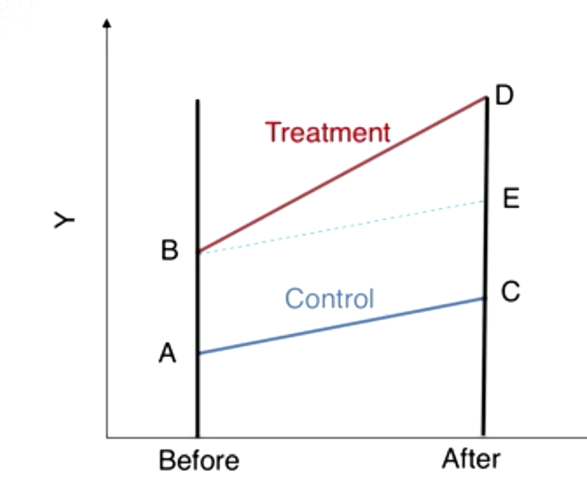

MGT 6203: Data Analytics in Business
Table of Contents
- 1. Module 01: Linear Regression
- 1.1. Steps in Regression Analysis
- 1.2. Real estate pricing example
- 1.3. Notation in regression analysis
- 1.4. \(R^2\) and Adjusted \(R^2\)
- 1.5. Simple regression with 1 variable in R
- 1.6. Multiple regression
- 1.7. \(R^2\) and adjusted \(R^2\) in multiple regression
- 1.8. Simple vs multiple regression
- 1.9. M1L7 lecture quiz
- 1.10. M1L8 Common problems and fixes in fixing regression (I)
- 1.11. M1L9 Common problems and fixes in fixing regression (II)
- 2. Module 02: Indicator variables and Interaction Terms
- 3. Module 03: Non-linear transformation models
- 4. Module 04: Logistic Regression
- 4.1. M4L1: Odds
- 4.2. M4L2: Binary Dependent Variable
- 4.3. M4L3: Logistic Regression
- 4.4. M4L4: Logistic Regression using the Default dataset
- 4.4.1. M1: no predictors \(\text{logit}(p) = b_0\)
- 4.4.2. M2: single binary predictor \(\text{logit}(p) = b_0+b_1\times \text{stdt}\)
- 4.4.3. M3: single continuous predictor \(\text{logit}(p) = b_0+b_1\times \text{balance}\)
- 4.4.4. M4: multiple predictors \(\text{logit}(p) = b_0 + b_1\times \text{balance} + b_2 \times \text{income} + b_3 \times \text{stdt}\)
- 4.4.5. M4L4 lecture quiz
- 4.5. M4L5: Predictions and Confusion Matrix
- 4.6. M4L6: Sensitivity, Specificity, and the ROC curve
- 5. Module 05: Treatment Effects
- 6. Module 06: Measuring Returns
- 6.1. M6L1: Introduction
- 6.2. M6L2: Simple and compound returns
- 6.3. M6L3: Measuring risk
- 6.3.1. Both risk and return matter when investing
- 6.3.2. Standard deviation of returns
- 6.3.3. Standard deviation ~ Total risk
- 6.3.4. Decomposing risk
- 6.3.5. Interpreting β
- 6.3.6. High-water mark and drawdown
- 6.3.7. Estimating mean return and standard deviation
- 6.3.8. Estimating β and R2
- 6.3.9. Drawdown
- 6.3.10. Summary (no lecture quiz)
- 6.4. M6L4: Historical returns
- 7. Module 07: Measuring Risk-Adjusted Performance
- 8. Module 08: Factor-based Investing (Investing Analytics)
- 9. Module 09: Marketing and Advertising
- 10. Module 10: Implementing Integrated Digital Marketing
- 11. Module 11: Implementing Predictive Marketing Across Channels
- 12. Module 12: Operations Management
- 13. Module 13: Quality
1. Module 01: Linear Regression
1.1. Steps in Regression Analysis
- State problem
- Use regression for:
- Diagnostic, or
- Predictive, or
- Prescriptive analytics?
- Select relevant response and explanatory variables
- Collect data
- Internal
- External
- Purchased
- Experiment
- Choose fitting method
- Ordinary least squares (OLS)
- Generalized least squares
- Maximum likelihood
- Fit model
- Validate model with diagnostics
- Refine and iterate from step 3
- Use model
1.1.1. Business examples (Dependent vs independent variables)
- Used car price
- odometer reading, age of car, condition
- Sales
- ad spend
- Time taken to repair product
- experience of technician
- Product added to shopping card
- ratings/price
- Starting salary of new employee
- work and education experience
- Sale price of house
- square feet, bedrooms, location
- Customer default?
- Credit score, income, age
- Customer churn?
- Length of contract, age of customer
1.1.2. M1L1 lecture quiz
- Variable eg price can be either dependent or independent variable, depends on purpose of model
- Binary value variable can be dependent variable, eg logistic regression
1.2. Real estate pricing example
- Example: sell house, predict listing price.
- Can ask realtors, but is there a more analytical approach?
- They normally use "comparables" to suggest a listing price
- If actual data with price, size, bedroom and bathroom number, etc, are available, regression can be used to help get a better price estimate
1.2.1. Housing dataset ecdat
- Can be used for this problem
- Data from Canadian city Windsor from 1987
- Or, collect or scrape prices from the web
- Do EDA, e.g.:
- histogram
- correlation matrix
- scatter plot with linear regression line
1.2.2. M1L2 lecture quiz
- For right-skewed distribution, mean is larger than median
- Correlation coefficient only captures linear relationships
1.3. Notation in regression analysis
- Explanatory
- independent variables
- Response
- dependent variables
- \(i = 1, 2, ..., n\)
- \(i\) th observation or record in dataset, typically a sample
- \(\{x_{11}, ..., x_{p1}\}, \{...\}, \{x_{1n}, ..., x_{pn}\}\)
- \(n\) observations of \(p\) explanatory variables
- \(y_1, ..., y_n\)
- \(n\) observations of the dependent variable
- \(\bar{y}\)
- mean value of dependent variable, \(y\)
- \(\bar{x}_k\)
- mean value of \(x_k\) th explanatory variable
- \(\beta_0, ..., \beta_p\)
- parameters of regression line for population
- \(b_0, ..., b_p\)
- estimates of \(\beta\) parameters obtained by fitting the sample data
- \(\epsilon_i\)
- error term for \(i\) th observation in population
- \(e_i\)
- error term for \(i\) th observation int he sample
- \(\widehat{y}_i\)
- estimated value of \(y\) for the \(i\) th observation in sample. Obtain by evaluating regression function at \(x_i\)
1.3.1. Steps with example
- Observe data in
ecdat, which is a sample - Build model for population (valid relation) \[ Y_i = \beta_0 + \beta_1 X_i + \epsilon_i \]
- \(\epsilon_i\) are independently and identically distributed (iid) random variables, normally distributed with mean 0 and s.d. \(\sigma\)
- We don't know \(\beta_0\), \(\beta_1\), \(\sigma\) so need to estimate with sample data
- Using sample, we build model: \[ Y_i = b_0 + b_1 X_i + e_i \]
- Population model is homoskedastic i.e., has constant \(\sigma\), and has mean 0.
- Split data into say 100 samples and model these. Of 100, 95 will have the population slope.
- Use OLS to fit the line
Interpretation:
- Find mean \(\bar{y}\)
- Regression line: \(\widehat{y} = b_0 + b_1 x\)
- Intercept at \(x=0\), \(y=b_0\)
- For any point \(x_i\):
- Predicted value is \(\widehat{y}_i\).
- Actual value is \(y_i\).
- Need to minimize total deviation as defined by sum of squared error.
- Total deviation is against \(\bar{y}\):
- Explained deviation is \(\widehat{y} - \bar{y}\)
- Total deviation is \(y_i - \bar{y}\)
- Residual (error term) is unexplained deviation, i.e. \(y_i - \widehat{y}_i\)
1.3.2. M1L3 lecture quiz
- The total deviation at \((x_i, y_i)\) is \(y_i - \bar{y}\): true
- In OLS, the intercepts of slope and intercept do depend on the sample being used.
1.4. \(R^2\) and Adjusted \(R^2\)
1.4.1. Deviations
- Sum of deviations
- SST = SSE + SSR
- SST
- Total sum of squares = \(\sum_{i}(y_i-\bar{y})^2\)
- SSE
- Sum of squared errors = \(\sum_{i}(y_i-\widehat{y}_i)^2\)
- SSR
- Sum of squares regression = \(\sum_{i}(\bar{y} - \widehat{y}_i)^2\)
1.4.2. Regression output \(R^2\) and Adjusted \(R^2\)
- \(R^2\)
- coefficient of determination. Measures strength of relationship between dependent and independent variables.
- \(R^2\) never decreases as you add variables
- \(R^2\) = 1-(SSE/SST) = SSR/SST = explained deviation/total deviation
- \(R^2\) shows how much of variation in \(Y\) (vs. mean) has been explained by the model.
- Adjusted \(R^2\)
- accounts for the fact that adding variables increases predictiveness
- Adjusted \(R^2\) adds a penalty for the number of independent variables \(p\)
- Adjusted \(R^2\) = \(1-\frac{SSE/(n-p-1)}{SST/(n-1)}\)
1.4.3. Examples
- When \(R^2\) = 1
- X accounts for all variation in Y. SSE = 0
- When \(R^2\) = 0
- X accounts for none of variation in Y. SSE = 1
- When \(R^2\) = 0.75
- X accounts for most of the variation. SSE = 0.25
1.4.4. M1L4 lecture quiz
- When \(R^2\) = 0, X values account for none of the variation in Y.
- \(R^2\) can take values in \((0,1)\)
1.5. Simple regression with 1 variable in R
- Using
lmin R to fit simple linear regression - Residuals are shown first. Residuals are the unexplained deviation/error, i.e. \(y_i-\widehat{y}_i\).
- Output of running regression models in R:
- Null and alternative hypotheses
- Coefficients:
Estimateshows the valueStd. Errorshows the standard deviationt value= coefficient / standard error- To reject null hypothesis,
Pr(>|t|)i.e. p-value must be very small
- p-value: the probability of finding a t-value of this size if the null hypothesis is true.
- F-statistic: the probability that \(b_1 = 0\).
1.5.1. Interpreting coefficients
(Intercept) Estimate: 3.414e+04
lotsize Estimate: 6.599e+00
- \(b_0\) = 34,140
- Intercept of regression line on y. When lotsize is 0. Less useful
- \(b_1\) = 6.599
- Increase of 1,000 sqft associated with increase of 6,599 of house keeping all else constant, ceteris paribus.
| Df | Sum Sq | Error term | |
|---|---|---|---|
| lotsize | 1 | 1.1156e+11 | SSR |
| Residuals | 544 | 2.7704e+11 | SSE |
- Regression output \(R^2\) and Adjusted \(R^2\). Need to know how to calculate and interpret.
- For simple regression, \(\sqrt{R^2}\) is the correlation coefficient between price and lotsize.
1.5.2. F-test: shows whether model is significant
- i.e., reject \(H_0\)
- Result is the F statistic
- Can range from (0, \(\infty\))
1.5.3. M1L5 no lecture quiz
1.6. Multiple regression
- Linear regression with multiple (\(p\)) explanatory variables
- Terms:
- Regression coefficients
- \(b_0, ..., b_p\) estimate \(\beta_0, ..., \beta_{p}\)
- Prediction for Y at \(x_i\)
- \(\widehat{y} = b_0 + b_1 x_{1i} + b_2 x_{2i} + ... + b_p x_{pi}\)
- Residual
- \(e_i = y_i - \widehat{y}_i\)
- SSE
- \(\sum_{i} (y_i - (b_0 + b_1 x_{1i} + b_2 x_{2i} + ... + b_p x_{pi}))^2\)
- Goal is to choose \(b\) terms to minimize SSE
- Add a variable, bedrooms. Question: does number of bedrooms explain the price?
- Do EDA with plots/histogram
1.6.1. Regression output
b terms are estimates of true parameters \(\beta\) terms \(H_0\) the parameters are \(0\), \(H_1\) they are not \(0\).
| Estimate | |
|---|---|
| (Intercept) | 5.613e+03 |
| lotsize | 6.053e+00 |
| Bedrooms | 1.057e+04 |
all ceteris paribus:
- \(b_0\) = 5,613
- intercept on y axis
- \(b_1\) = 6.053
- increase per square feet is $6.053
- \(b_2\) = 10,570
- increase per bedroom is $10,570
1.6.2. M1L6 no lecture quiz
1.7. \(R^2\) and adjusted \(R^2\) in multiple regression
Anova table:
| Df | Sum Sq | Error term | |
|---|---|---|---|
| lotsize | 1 | 1.1156e+11 | \(SSR_1\) |
| bedrooms | 1 | 3.23239e+10 | \(SSR_2\) |
| Residuals | 543 | 2.4472e+11 | SSE |
- \(\text{SSR}_1 + \text{SSR}_2\) = SSR
- SSR + SSE = SST
- Rejecting null hypothesis by analysing the F statistic means the model is significant.
1.8. Simple vs multiple regression
- \(R^2\) will not decrease when adding variables
- Higher adjusted \(R^2\) in multiple regression
- Comparing 2 models with different number of variables: \[ F = \frac{(R^2_2 - R^2_1)/(p_2-p_1)}{(1-R^2_2)/(n-p_2-1)} \]
1.9. M1L7 lecture quiz
- In general adding more variable does not decrease overall \(R^2\) value of multiple regression.
- Small p-value means that there is evidence that coefficient is not 0.
1.10. M1L8 Common problems and fixes in fixing regression (I)
1.10.1. Assumptions of linear regression
- Linearity
- i.e. \(E(y) = b_0 + b_1 x\), i.e. the expected value of Y at each X is approximately a straight line
- Assumptions about error terms
- (a) The error terms are independent, and identically distributed (iid). (b) Each error term has mean 0 and constant variance σ2, i.e. homoscedastic
- Assumptions about predictors
- In multiple recession, the predictor variables are linearly independent of each other
1.10.2. Common problems in fitting Linear Regression
- Response/predictor relationship is non-linear
- Error terms are correlated
- Error terms have non-constant variance
- Outliers
- High leverage points
- Collinearity
1.10.3. (1) Non linear relationship
- Checks
- Check scatter plots of Y vs X, before fitting model
- Check residuals vs fitted values (no pattern = good)
- Workarounds
- Model non-linear relationship with higher order terms e.g. x2
- Use variance reducing transformations, e.g. log, to get better linear fit
- Remove outliers or some parts of the observations driving non-linearity
- Check for omitted variables
- Check for systematic bias when collecting data
- Check residuals!
1.10.4. (2) Correlation of error terms
- There is autocorrelation if error terms are correlated
- Knowing error term ei should not have influence on size of ei+1
- This assumption is used to estimate standard errors of the model parameters
- If autocorrelation exists:
- Estimated standard errors < true standard errors
- Confidence intervals appear narrower than actual
- P-values appear lower than actual
- False sense of confidence
1.10.5. (3) Heteroskedasticity (non-constant error variance)
- Model assumes: spread of responses around the straight line is the same at all \(x\)
- Violated if there is non-constant error present, e.g. if errors increase with fitted values
- If heteroskedastic:
- Hypothesis test and confidence intervals misleading

1.10.6. M1L8 lecture quiz
- Scatter plot of Y vs X shows non-linear pattern -> SHOULD change linear regression model
- Autocorrelation is the correlation between each of the ei variables -> True
- Heteroskedasticity = constant error variance -> FALSE
1.11. M1L9 Common problems and fixes in fixing regression (II)
1.11.1. (4) Outliers
- yi value far from predicted \(\widehat{y}_i\)
- Visualise by plotting residuals, or standardized residuals, vs predicted \(y\)
- Points with std residuals > 2-3 sd away from mean (0) are outliers
- Causes:
- Incorrect data recording
- Phenomenon is not linear (model is wrong, missing predictor, etc)
- Should ensure fit is not overly determined by one/ a few observations i.e. outliers
- Outlier identified as influential point if it unduly influences the regression analysis

1.11.2. (5) High leverage points

- These are observations with predictor \(x\) value outside normal range of observations for \(x\)
- Does not have large std residual
- Can affect regression results
- Point has high leverage if its deletion (by itself or with 2-3 other points) causes noticeable changes in the model
- With many predictors: it's possible to have an observation within range of each predictor's value but still be unusual
- Measure with Cook's distance Ci, i.e. the difference between coeff's obtained from:
- The full data
- The full data deleting observation \(i\)
- Ci > 1 = highly influential
- Also an influential point if Ci > 1
1.11.3. Plots in R
plot(lm) model provides plots:
- Residual vs fitted
- check if residuals have non-linear patterns
- Normal Q-Q
- check if residuals are normally distributed
- Scale-location
- check if standardized residuals are spread equally along fitted values
- Residuals vs leverage
- finds influential points, with Ci > 1
1.11.4. (6) Multicollinearity
- e.g. mpg ~ cyl; mpg ~ cyl + disp + wt.
- The 2nd module exhibits multicollinearity.
- Two or more predictors are linearly related
- Check
- With variance inflation factors, VIF
- Regress Xj against all other X. Name resulting R2 as \(R^2_j\)
- Define VIF = \(\frac{1}{1-R^2_j}\), \(j=1,2,...,p\)
- If Xj has strong linear relationship to other X predictors, then Rj2 is close to 1 and VIFj is large
- VIF > 5 -> Multicollinearity
- In R, use
vif(lm(model))to check the VIF values.library(car)is required.
- Use correlation matrix
- With variance inflation factors, VIF
- Consequences
- OLS estimated parameters may have large variances and covariances, thus precise estimates difficult
- Confidence intervals of estimated parameters are larger, hence can't reject H0 (that bi = 0)
- Regression coeffs might have wrong sign
- Regression coeffs might be not significantly different from 0 even for large R2
- Adding explanatory variable changes other varS coeff
- Solution
- Pick one variable if multiple ones measure the same "thing"
- Use PCA or factor analysis to create even more useful variable(s)
2. Module 02: Indicator variables and Interaction Terms
2.1. M2L1: Intro (Customer Analytics Dataset)
- Direct Marketing dataset
- Modeling customer characteristics to predict AmountSpent
- Understand why some individuals spent more than others
- In particular, the effect of Salary
- Scatter plot of Salary vs AmountSpent
- Can include the regression line
2.1.1. No lecture quiz
2.2. M2L2: Creating and Using Indicator Variables
- a.k.a. dummy variables
- Categorical variables, e.g. age, are also known as factor variables
- They have distinct values, e.g. Age = Old, Age = Young, Age = Middle
- How to include age variable in regression model that requires numeric values?
- e.g. if we want to investigate the effect of age on AmountSpent
- Need to quantify this variable
- With 3 possible values for \(\text{Age}\), we need 2 indicator variables
- Base case is both dummies = 0, i.e. Age = Young.
- This is the reference group to compare for the other values of the dummy variable.
- Any value of the categorical can be used as the base case
- In this instance, the dummies created are:
AgeMid= 1 if Age = Middle, 0 otherwiseAgeOld= 1 if Age = Old, 0 otherwise
- Regression equation: \(\text{AmountSpent} = b_0 + b_1*\text{AgeMid} + b_2*\text{AgeOld}\)
2.2.1. M2L2 lecture quiz
- Can record have AgeMid = 0, AgeOld = 0?
- Yes, when Age = Yound
- Can record have AgeMid = 1, AgeOld = 1?
- No
2.3. M2L3: Interpreting the coefficients of indicator variables
2.3.1. DR1: regression with dummy variable
Coeffs:
Estimate t-value Intercept 55.862 10.93*** AgeMid 94.307 14.75*** AgeOld 87.350 11.03*** - Equation: \(\text{AmountSpent} = b_0 + b_1*\text{AgeMid} + b_2*\text{AgeOld}\)
- Age = Young spends average $55.862
- This is the base case
- Middle age average AmountSpent = $55.862+$94.307
- The AgeMid coefficient is the increase in AmountSpent for middle aged customers compared to young customers
- Graphically, the indicator variable shifts up the Mid and Old AmountSpent. All are parallel to x-asis.
- In R, a factor variable can be used directly without constructing the indicator variable, e.g.
lm(AmountSpent ~ Age, data=dirmkt)- R provides the new variables AgeMiddle and AgeYoung
Use contrasts function to find the base case, e.g.
contrasts(dirmkt$Age)which shows:Middle Young Old 0 0 Middle 1 0 Young 0 1
2.3.2. DR2: regression with salary and dummy variables
Coeffs
Estimate t-value Intercept -6.12 -1.30 Salary 0.002 25 AgeMid -4.81 -0.75 AgeOld 23.28 3.46 - Equation: \(\text{AmountSpent} = b_0 + b_1*\text{Salary} + b_2*\text{AgeMid} + b_3*\text{AgeOld}\)
- Graphically:
- b1 and b2 are shifting up/down the Amount
- Each age group has lines with slope b0
2.3.3. M2L3 lecture quiz
- For the above coeffs, old customers spend more than young customers at the same salary level
2.4. M2L4: Interaction term and interpreting its coefficient
- Example: regression with dummy variables.
Locationis categorical variable with values:- "Close" = customer lives close to store that sells similar merchandise
- "Far" = customer does not live close…
- Create a new variable
Far:- \(1\) if
Location= Far - \(0\) otherwise
- \(1\) if
Coeffs:
Estimate t-value Intercept -20.48 -4.64 Salary 0.002 34.05 Far 59.06 13.38 - Equation: \(\text{Amount Spent} = b_0 + b_1 \text{Salary} + b_2 \text{Far}\)
- Estimated amt spent for customer who lives \(Far\):
- 38.58 + 0.002*Salary
- Assumptions:
- Customers who live far away will spend at the same rate that customers who live nearby. Is this realistic?
2.4.1. Interaction term
- Same example but construct new variable
- \(\text{SalaryFar} = \text{Salary} \times \text{Far}\)
- \(\text{Amount Spent} = b_0 + b_1 \text{Salary} + b_2 \text{Far} + b_3 \text{SalaryFar}\)
- New coeffs:
| Estimate | t-value | |
|---|---|---|
| Intercept | 1.448 | 0.3 |
| Salary | 0.002 | 24.72 |
| Far | -13.46 | -1.55 |
| SalaryFar | 0.001 | 9.57 |
- Interpretation of coefficient for \(\text{SalaryFar}\):
b3 is the amount to add to b1 to get the slope for people who live far away

2.4.2. M2L4 lecture quiz
- If the salary for customer who lives close increases by $10,000, what is the projected increase in AmountSpent for that customer?
- $10000*0.002=$20
- What is the equivalent increase for a customer who lives Far?
- $10000*0.002+$10000*0.001 = $30
2.4.3. Categorical variable with \(\text{M}\) values
- Indicator variable has \(M\) possible values, then need to construct \(M-1\) dummy variables.
- Base case always applied to the group with indicator variables set to \(0\).
- All other cases interpreted with reference to base case.
2.5. M2L5: Another example of using indicator variables
2.5.1. Airbnb Los Angeles dataset
- e.g. owner aiming to understand key factors that influence price
- Questions:
- Is there a relationship between capacity and price?
- Does the type of rental (shared, private or full home) change the relationship?
2.5.2. 2DR1: How does room price vary by capacity?
| Value | |
|---|---|
| Intercept | 15.039 |
| Capacity | 38.272 |
| R2 | 0.367 |
| Adjusted R2 | 0.367 |
Create two dummy variables as follows. Base case (both 0) is "Shared" room type.
Private_ind:- 1 if "Private room"
room type - 0 otherwise
- 1 if "Private room"
House_ind- 1 if "Entire home/apt"
room type - 0 otherwise
- 1 if "Entire home/apt"
- 2DR1: Equation
\[ \text{Price} = b_0 + b_1*\text{Private_ind} + b_2*\text{House_ind} \]
Estimate p-value Intercept 37.149 12.58 Privateind 35.666 11.42 Houseind 133.442 43.64 - 2DR1: Interpretation:
- Average price of room = 37.149
- Shared room
- Average price of private room
- 37.149+35.666
- Average price of entire house
- 37.149+133.442
2.5.3. 2DR2: 2nd regression with capacity and dummies
| Estimate | t-value | |
|---|---|---|
| Intercept | -19.017 | -7.101 |
| Capacity | 29.292 | 82.605 |
| Privateind | 30.339 | 11.076 |
| Houseind | 75.776 | 27.346 |
- Equation: \[ \text{Price} = b_0 + b_1*\text{Capacity} + b_2*\text{Private_ind} + b_3*\text{House_ind} \]
- Question: What's the average increase in price for each extra person (capacity)?
- Image:

2.5.4. Interaction terms
- Create 2 new variables:
P_Cap:Private_ind*CapacityH_Cap:House_ind*Capacity
- New equation \[ \text{Price} = b_0 + b_1*\text{Capacity} + b_2*\text{Private_ind} + b_3*\text{House_ind} + b_4*\text{P_Cap} + b_5*\text{H_Cap} \]
Regression coeff's:
Estimate t-value Intercept 35.885 8.728*** Capacity 0.659 0.391 Privateind 20.684 4.427*** Houseind 2.293 0.518 PCap 7.080 3.636*** HCap 33.414 19.323***

2.5.5. No lecture quiz
3. Module 03: Non-linear transformation models
3.1. M3L1: Intro (and why needed)
Examples:
- Population and rank of cities
- Residuals and predicted price (Housing dataset)
- Non-constant variance (heteroskedascity)
- Model A: \(\text{price} = b_0 +b_1 *\text{lotsize}\)
- Q-Q plot shows non-linearity
- Residuals vs fitted shows non-constant variance
- FOCUS on natural log transformations in 6203 as these are easier to interpret
3.1.1. Summary of models
| Y | log(Y) | |
|---|---|---|
| X | Model A: level-level model \(Y=b_0 + b_1X\) | Model C: log-linear model \(\log(Y)=b_0+b_1X\) |
| log(x) | Model B: linear-log model \(Y=b_0 + b_1\log(X)\) | Model D log-log model \(\log(Y) = b_0 + b_1\log(X)\) |
Notes: if variable \(x\) has values = 0, then use log(x+1) transformation.
3.2. M3L2: Linear-Log model
Coeff table:
Estimate t-value Intercept -250.728 -12.42 log(lotsize) 37660 15.81 - R2 = 0.315
- Adjusted R2 = 0.3137
- Equation:
\(\text{price} = b_0 + b_1\log(\text{lotsize})\)
- Creates a new variable log(lotsize), which is the natural log of \(\text{lotsize}\)
3.2.1. Interpretation of coefficients
b1 = 37660 implies that:
- for every 1% increase in \(\text{lotsize}\):
- the price increases by $376.60 approximately (i.e. 1/100 coefficient)
- This works because increasing X by 1% is ~ increasing log(X) by 0.01
- Hence the increase changes Y variable by 0.01*b1
3.2.2. No lecture quiz
3.3. M3L3: Log-Linear model
Model C: \(\log(\text{price}) = b_0 + b_1\text{lotsize}\)
Coeff table
Estimate t-value Intercept 10.58 306.51 lotsize 0.00009315 15.08 - R2 = 0.2947
- Adjusted R2 = 0.2935
- Creates a new variable log(price)
3.3.1. Interpretation of coefficients
- Coefficient b1 indicates:
- When lotsize increases by 1 sqft,
- Price increases by 0.009315% on average, i.e.
- Dependent variable changes by \(100\times\text{coefficient}\) percent
- for a 1 unit increase in independent variable
- Keeping all other variables constant
3.3.2. Derivation
- Increase x by 1 unit increases log(y) by b1 units
- \(\log(price) = b_0 + b_1x\) is the same as: \(y = e^{(b_0+b_1x)}\)
- Hence: \(\frac{dy}{dx} = b_1y\), and \(\frac{dy}{y} = b_1dx\)
- Multiplying by 100:
- \(100\times\frac{dy}{y} = 100\times b_1\times dx\)
- \(100\times\frac{dy}{y}\) is the percentage change in \(Y\)
- If dx=1, then this 1 unit change in x => 100b1 % change in \(Y\)
- Note that this approximation works when \(b_0+b_1x\) is very small
- Accurate calc: \(\text{percentage change in Y} = (e^{b_1}-1)\times100\) for 1 unit change in \(X\).
3.3.3. No lecture quiz
3.4. M3L4: Log-Log model
Both LHS and RHS are log transformed. \[ \log(\text{price}) = b_0 + b_1 \times \log(\text{lotsize}) \]
| Estimate | t-value | |
|---|---|---|
| Intercept | 6.468 | 23.37 |
| lotsize | 0.54218 | 16.61 |
- R2 = 0.3364
- Adjusted R2 = 0.3352
3.4.1. Interpretation
- Increasing independent variable by 1% increases dependent variable by b1 %
- i.e., Increase 1% in lotsize increases price by 0.54218%
- This works because increasing log(X) by 0.01 is almost equal to increase X by 1%, which implies changing Y by b1 %
- Elasticity = % change in Y for 1% increase in X
- For log-log model, b1 = elasticity
3.4.2. Reasons for log-transforming data
- Achieve more linear r/s
- Make distribution more normal
- Make variance more constant
- Get better fit in model i.e. increase R2
3.4.3. Summary of models and interpretation
| Y | log(Y) | |
|---|---|---|
| X | Model A: level-level model \(Y=b_0 + b_1X\) | Model C: log-linear model \(\log(Y)=b_0+b_1X\) |
| log(x) | Model B: linear-log model \(Y=b_0 + b_1\log(X)\) | Model D log-log model \(\log(Y) = b_0 + b_1\log(X)\) |
| Y | log(Y) | |
|---|---|---|
| X | Model A: level-level (X + 1 unit, Y Δ b1 units) | Model C: log-linear (X + 1 unit, Y + (b1×100)% ) |
| log(x) | Model B: linear-log (X+1%, Y+\(\frac{b_1}{100}\) units) | Model D log-log (X+1%, Y Δ b1%) |
3.4.4. M3L4 no lecture quiz
3.5. M3L5: Polynomial model
Example: \[ \text{Price} = b_0 + b_1 \times \text{lotsize} + b_2 \times \text{lotsize}^2 \]
- Creates a new variable lotsquare = lotsize2 and fit on the formula above
- Cannot interpret different powers by 'holding constant'
- i.e., a quadratic and higher power model does not allow for an isolated interpretation of coefficients
- since \(\frac{\text{d(price)}}{\text{d(lotsize)}} = b_1 + 2b_2\times\text{lotsize}\)
- This means the slope is not constant and changes at every point of the quadratic curve
3.5.1. M3L5 no lecture quiz
4. Module 04: Logistic Regression
4.1. M4L1: Odds
- Odds express the likelihood of an event
- Written as X to Y or X:Y
- Gambling odds are "odds against" (i.e., the probability that event will not happen is greater than that it will)
- 10 to 1 means that betting $1 wins $10, on top of getting back the $1
- In this module, we deal with odds for or odds on
- The probability that an event is more likely to happen than not
- 2 to 1 means event is 2x as likely to happen as not
- Gambler in this case stakes $2 and wins $1 (+$2) if event happens
4.1.1. Odds For in statistics
- Odds
- ratio of probabilities
- Odds for
- ratio of \(\frac{\text{probability of event happening}}{\text{probability of event NOT happening}}\)
Take \(p\) as probability of event happening, then: Odds for = \(\frac{p}{1-p}\)
- If Odds For is 2:1, then: \[ \text{Odds for} = \frac{2}{1} = \frac{p}{1-p} \\ p = 2-2p \\ 2=3p \\ p=\frac{2}{3} \]
- Knowing Odds we can get \(p\): \[ p = \frac{\text{odds for}}{1+\text{odds for}} \]
4.1.2. M4L1 lecture quiz
- A betting site shows odds of NE Patriots winning next Super Bowl is 5 to 1 (odds against). What is the probability of them winning the next super bowl?
- Answer: 1/6. Odds for = 1/5, apply above formula.
- Team Germany has a 12.5% (1/8) probability of winning the next World Cup. What is the odds for Team Germany winning the next World Cup?
- Answer: 1/7. Apply above formula.
4.2. M4L2: Binary Dependent Variable
- Recap: relationship between Odds For and \(p\)
- Example of binary dependent variables
- whether student will get A
- whether firm goes bankrupt
- whether customer makes a purchase
- whether debtor defaults
- whether loan is approved
- Example: `GradesR.csv`
- Variables
- Grade = 1, student got A, else 0
- Hours = amount of time spent
- Using linear regression to model binary outcomes leads to weirdness, as regression line is continuous
- Predicted values ≠ 0 or 1
- Predicted values < 0
- Predicted values > 1
- Variables
4.2.1. M4L2 no lecture quiz
4.3. M4L3: Logistic Regression
4.3.1. Comparison of logisitic and linear regression
Logistic regression is similar to linear regression with 2 main differences:
- \(Y\), i.e. outcome or response, is a categorical variable, e.g., Yes/No, Approve/Reject, Pass/Fail
- Result expressed as probability of being in a group. Implies predicted value is [0,1].
4.3.2. Implementing logistic regression
- We use the logistic function, which gives probability of being in a group
- \(p(x) = \text{Prob}(y=1|x)\), i.e. the probability of \(y\) == 1 given an \(x\) value
- Logistic function: \[ p(x) = \frac{e^{b_0+b_1x}}{1+e^{b_0+b_1x}}, \text{i.e.,} \\ p(x) = \frac{\exp(b_0+b_1x)}{1+\exp(b_0+b_1x)} \]
- p(x), simplified to \(p\), will always be between 0 and 1 for all values of x
- hence: \[ \frac{p}{1-p} = \exp(b_0+b_1x) \\ \log(\frac{p}{1-p}) = b_0+b_1x \]
- \(\log(\frac{p}{1-p})\) is the log of odds for, or logit
- is: \[ \text{logit}(p) = \log(\frac{p}{1-p}) \\ = b_0+b_1x \]
- Other components of the regression model are identical to linear regression
4.3.3. Why transform from probability to log odds?
- Mapping probability with range (0,1) to log odds with range (-∞,∞) will:
- Difficult to model variable with restricted range such as probability
- Get around restricted range problem of probability
- Among possible transformation methods, log odds is among easiest to understand and interpret
4.3.4. Interpreting logistic regression model
- logit(p) = \(\log(\frac{p}{1-p}) = b_0+b_1x\) means:
- As \(x\) increases by 1 unit, \(\log(\text{odds})\) increases by b1
- Equal to odds increasing by a factor of \(\exp(b_1)\), which is approximately 100*b1 %
- Exact change is (eb1-1)×100%
4.3.5. M4L3 lecture quiz
- The logistic function, p(x), returns values
- [0,1]
- \(\log{\frac{p}{1-p}}=b_0+b_1x\) means that when \(x\) increases by 1 unit,
- \(\log(\text{odds})\) increase by b1
- odds increase by factor of \(\exp(b_1)\)
- odds increase by roughly \(100\times b_1\%\)
4.4. M4L4: Logistic Regression using the Default dataset
- Dataset from ISLR library.
- Do EDA:
- income vs balance, color=Default
- box plot for balance vs Default
- Logistic regression models:
- M1: no predictors \(\text{logit}(p) = b_0\)
- M2: single binary variable: \(\text{logit}(p) = b_0+b_1\times \text{stdt}\)
- M3: single continuous predictor var: \(\text{logit}(p) = b_0+b_1\times \text{balance}\)
- M4: multiple predictors: \(\text{logit}(p) = b_0 + b_1\times \text{balance} + b_2 \times \text{income} + b_3 \times \text{stdt}\)
- Defining \(p=\frac{\text{odds}}{1+\text{odds}}\)
- prob that default = "Yes"
- \(\text{logit}(p) = \log(\frac{p}{1-p})\)
4.4.1. M1: no predictors \(\text{logit}(p) = b_0\)
- Intercept = -3.368 = log-odds of being in default for entire population
- hence \(\exp(-3.368)\) = odds = p/(1-p)
- p = 0.0333
4.4.2. M2: single binary predictor \(\text{logit}(p) = b_0+b_1\times \text{stdt}\)
- Coefficients:
- Intercept = -3.50
- stdt = 0.40
- Intercept is for non-students (stdt = 0)
- This is the reference / base case
- Odds for non-student = \(\exp(-3.50)\)
- p=0.0292
- Odds for student = \(\exp(-3.50+0.40)\)
- p=0.0431 (higher than non-students)
4.4.3. M3: single continuous predictor \(\text{logit}(p) = b_0+b_1\times \text{balance}\)
- Coefficients:
- Intercept = -1.065e+01
- balance = 5.499e-03 (i.e. 0.0055)
- \(b_1\) = 0.0055
- Increase in balance is associated with increase in log-odds (and hence the odds for) of default
- Adding $1 to balance increases log-odds by 0.0055
Examples, with \(p(x)=\frac{e^{b_0+b_1x}}{1+{e^{b_0+b_1x}}}\)
x p 1000 0.00576 1500 0.08317 2000 0.5866 - Increasing x by 500 has non-linear effect on p(x)
4.4.4. M4: multiple predictors \(\text{logit}(p) = b_0 + b_1\times \text{balance} + b_2 \times \text{income} + b_3 \times \text{stdt}\)
Coefficients
- Intercept: -1.087e+01 (10.87)
- balance: 5.737e-03 (0.0057)
- income: 3.033e-06 (0.000003)
- stdt: -6.468e-01 (-0.65)
- Interpretation:
- Increase of balance associated with increasing log odds and hence probability of default
- Adding $1 to balance increases log odds by 0.0057
- Students now less likely to default due to -0.65 log odds, different result from M2
- This can be explained by students carrying more balances, hence they default at higher rate
- Log curve is shifted to the right
- Confounding -> there is correlation between student and balance
4.4.5. M4L4 lecture quiz
- For logistic model where Y=1 is the default case:
- \(b_0\) means the log odds of being in default for the entire population
4.5. M4L5: Predictions and Confusion Matrix
- Making predictions on fitted data, e.g. M4: \(\text{logit}(p) = b_0 + b_1\times \text{balance} + b_2 \times \text{income} + b_3 \times \text{stdt}\)
- Make predictions by using predict with Model 4, and use 0.5 as the cutoff
4.5.1. True Negative and False Positive
- Consider all Y=0 observed (no defaults)
- For each observation, use the logic model to make prediction with the X values
- If predicted value == 0, that's a true negative
- Else predicted value == 1, false positive
- As the cutoff is increased, true negatives increase and false positives decrease:
- Specificity increases
4.5.2. True Positive and False Negative
- Consider all Y=1 observed (defaults)
- For each observation, use the logic model to make prediction with the X values
- If predicted value == 1, that's a true positive
- Else predicted value == 0, false negative
- As the cutoff is increased, false negatives increase and true positives decrease:
- Sensitivity decreases
4.5.3. Confusion matrix
- Shows the intersection of actual and predicted values of model
- Matrix records the performance of classifier, i.e. lets you gauge how models perform
- Record predicted value \(\hat{y}\) after fitting logit model on dataset.
4.6. M4L6: Sensitivity, Specificity, and the ROC curve
4.6.1. Definitions
- Sensitivity
- true positive rate: \(\frac{\text{true pos}}{\text{true pos + false neg}}\)
- Specificity
- true negative rate \(\frac{\text{true neg}}{\text{true neg + false pos}}\)
- 1-Specificity
- False positive rate \(\frac{\text{false pos}}{\text{true neg + false pos}}\)
- Precision
- \(P(Y=1|\hat{y}=1) = \frac{\text{true pos}}{\text{true pos+false pos}}\)
- Accuracy
- \(\frac{\text{true pos+true neg}}{\text{true pos + false pos + true neg + false neg}}\)
4.6.2. Type I and II errors
- False positive error
- type I error. Falsely reject true (null) hypothesis. true Y=0, predicted Y=1.
- False negative error
- type II error. Incorrectly retain - fail to reject - false (null) hypothesis. True Y=1, predicted Y=0
- Cutoff
- Increasing cutoff decreases Type I error
- Increasing cutoff increases Type II error
- In business applications
Cost of making error depends on situation, e.g.:
- When modeling marketing spend, false positive means spending marketing costs on non-purchasers. Moderate loss. (Type I) error
- When modeling customer as non-defaulter who actually defaults. (Type II) error
4.6.3. Calculating sensitivity and specificity for cutoff \(p = 0.5\)
| Predicted | Values | |||
|---|---|---|---|---|
| 0 | 1 | Total | ||
| True | 0 | 9627 true neg | 40 false pos | 9667 |
| Values | 1 | 228 false neg | 105 true pos | 333 |
| 9855 | 145 | 10000 |
- Sensitivity = \(\frac{\text{true pos}}{\text{true pos + false neg}}\) = 105/(105+228) = 0.32
- Specificity = \(\frac{\text{true neg}}{\text{true neg + false pos}}\) = 9627/(9627+40) = 0.996
4.6.4. Increasing cutoff to \(p=0.9\)
- Sensitivity decreases to 0.03
- Specificity increases to 0.9998
4.6.5. Increasing cutoff value of \(p\)
- True neg increase, false pos decrease.
- False neg increase, true pos decrease.
4.6.6. ROC Curve
- "Receiver Operating Characteristic" curve
- Shows diagnostic ability of binary classifier, when the cutoff value is varied
- Look at area under curve. We want > 0.5
4.6.7. M4L6 lecture quiz
- Formula of sensitivity \(\frac{\text{true pos}}{\text{true pos + false neg}}\)
- Formula of specificity \(\frac{\text{true neg}}{\text{true neg + false pos}}\)
5. Module 05: Treatment Effects
5.1. M5L1: Correlations vs. Causality
5.1.1. Correlation
\[ Corr(X,Y) = \frac{\sum^n_{i=1}(x_i-\bar{x})(y_i-\bar{y})} {\sqrt{\sum^n_{i=1}(x_i-\bar{x})^2} \sqrt{\sum^n_{i=1}(y_i-\bar{y})^2}} \]
- Correlation measures the linear relationship between X and Y
- i.e., if Y=X2, Corr(X,Y) is 0 even though they're perfectly related
- Correlation(X,Y) has range (-1,1)
5.1.2. Strong Corr(A,B)
Possibilities:
- A causes B
- B causes A
- Note reverse causality! e.g., the faster windmill rotates -> faster windspeed observed
- A and B are consequence of another common cause C
- e.g. ice cream sales increase, more drownings.
- common cause is summer
- A -> C -> B
- Correlation is by chance
5.1.3. Post hoc ergo propter hoc
After this, therefore because of this
- Logical fallacy that if A happened, then B happened, A must have caused B to happen
- E.g. rooster crows just before sunrise, hence rooster causes sun to rise
- Please consider other factors that could be responsible for the result
- that might rule out the sequence connection
5.1.4. Causation
To establish causation:
- Time-wise, hypothesized cause must be before anticipated effect
- Change in cause must lead to change in effect
- Must discount all plausible explanations that could explain the relationship, other than the proposed cause
5.1.5. Relevance
- Needed in fields e.g. medicine
- Causal models used to build theories
- Managers need to know "how things work" i.e. theories
- For managers to make changes to price, mix, promotions, hence causal impact must be attributable
- If X does not cause Y, then don't bother spending effort in X
- If X causes Y, then can use a theory to explain why
5.1.6. M5L1 no lecture quiz
5.2. M5L2: Selection Bias
- Occurs when individuals selected for treatment without proper randomization
- Can be caused by:
- Self-selection, especially in poorly-designed experiments. Participants could be motivated to participate, or not.
- Voluntary response bias, participants are already interested in topic, thus over-represents vs population.
- Non-response bias, problem in surveys with low response rate
5.2.1. Assumptions in OLS estimation when estimating slope coefficient, \(b_1\)
- OLS estimator is used to estimate b1 in regression: \[ Y = b_0 + b_1 X + \epsilon \\ b_{OLS} = \frac{Cov(X,Y)}{Cov(X,X)} \\ = \frac{Cov(b_0+b_1X+e,X)}{Cov(X,X)} \\ = \frac{b_1 Cov(X,X)+Cov(e,X)}{Cov(X,X)} = b_1 + \frac{Cov(e,X)}{Cov(X,X)} \]
- This assumes orthogonality: \(Cov(e,X)=0\)
- When X, e are uncorrelated, bOLS is a good estimator of b1
- When X, e are correlated, bOLS is a bad estimator of b1
- When X is a dummy variable,
\[
b_{OLS} = b_1 + \frac{Cov(e,X)}{Cov(X,X)} \\
= b_1 + (\bar{e_1}-\bar{e_0})
\]
- b1
- treatment effect
- \((\bar{e_1}-\bar{e_0})\)
- selection bias
- \((\bar{e_1}-\bar{e_0})\), the selection bias
- if = 0, bOLS is good estimate of b1
- if ≠ 0, bOLS is bad estimate of b1
5.2.2. Controlling selection bias
- Randomized controlled experiment
- Assign test subjects into treatment and control groups
- Used in science, e.g. medicine, agriculture
- Difficult in economics
- Getting easier in business
- Assign test subjects into treatment and control groups
- Natural experiment
- Add control variables
- However this is a weaker approach
5.2.3. M52 no lecture quiz
5.3. M5L3: Randomized Controlled Experiment and the Difference Estimator
Setting up RCT
- Create initial sample Random assignment by generating random numbers in [0,1]
- If rn < 0.5 -> go to control group, no treatment (or placebo). \(d=0\) (dummy variable)
- If rn >= 0.5 -> go to test group, treatment. \(d=1\)
5.3.1. Regression model
- To analyze results, define \(d\) as: \[ d_i = 1 \text{ if individual i is in treatment group, else 0} \]
- Regression model with \(N\) individuals being studied \[ y_i = b_0 + b_1 d_i+e_i, \\ i = 1, 2, ..., N \]
- Regression functions: \[ \text{In treatment group: } (d_i=1) \\ E(y_i) = b_0 + b_1 \\ \text{In control group: } (d_i=0)\\ E(y_i) = b_0 \]
5.3.2. Difference estimator
- OLS estimator for b1 is:
\[
b_{OLS} = \frac{Cov(X,Y)}{Cov(X,X)} \\
= \frac{\sum^N_{i=1}(d_i-\bar{d})(y_i-\bar{y})}
{\sum^N_{i=1}(d_i-\bar{d})^2} \\
= \bar{y_1} - \bar{y_0} \\
\bar{y_1} = \sum^N_{i=1}\frac{y_i}{N_1} \\
\bar{y_0} = \sum^{N_0}_{i=1}\frac{y_i}{N_0}
\]
- N1
- number of obs. in treatment group
- N0
- number of obs. in control group
- bOLS
- difference estimate, as it's the difference between sample means of treatment and control groups
- Difference estimator can be rewritten as: \[ b_{OLS} = \frac{\sum^N_{i=1}(d_i-\bar{d})(e_i-\bar{e})} {\sum^N_{i=1}(d_i-\bar{d})^2} \\ = b_1 + (\bar{e}_1 - \bar{e}_0) \]
- If individuals can self-select into groups, then the selection bias in estimating treatment effect is: \(E(\bar{e}_1 - \bar{e}_0)\)
- Random assignment of individuals:
- No systematic differences
- The only difference is the treatment
- Random assignment: \(E(\bar{e}_1 - \bar{e}_0) = 0\)
- OLS estimator is thus unbiased.
- \(E\) is commutative.
5.4. M5L4: Star Experiment: Effect of Small Class Size
5.4.1. Summary
- Tennessee students randomly assigned in schools to:
- small class
- regular class
- regular class with paid aide
- Teachers randomly assigned to same groups
- data in
ecdat::star totalscore = tmathssk + treadssk(math + reading scores)- Indicator variables:
small= 1 if it's a small classboy= 1 if sex = boywhiteother= 1 if race = 'white or other'freelunch= 1 if lunch was free
5.4.2. Check for random assignment
- Regress \(\text{small ~ .}\) to check for significant coefficients
- If random assignment, no significant coefficients
- Use linear probability as small is 1/0
- All coefficients are not statistically significantly different from 0
- Hence there is random assignment
- Cannot reject b0 = 0.5
5.4.3. Summary stats
- Difference between small = 0 and small = 1 classes of
totalscorein summary stats:- mean of small = 0 (regular): 917.94
- mean of small = 1 (small): 932.05
5.4.4. First regression
Regression of \(\text{totalscore} = b_0 + b_1\text{small}+e\)
- small class sizes have significantly different scores than regular
- b1 estimate, 14.109, is statistically different from 0
- This is also the difference in the means in summary stats above
- Interpretation: 14.109 on above is added to students' total score if moved from regular-sized class to small-sized class
5.4.5. Second regression
Add teacher experience, i.e. \(\text{totalscore} = b_0 + b_1\text{small}+b_2\text{totexpk}+e\)
- b2 estimate is 1.1580, and it is statistically significant
- i.e. each additional year of teacher experience adds 1.16 points to total score on average
- Difference estimator, b1, = 14.21
- The effect of small class size is approximately the same as having teacher with \(\frac{14.21}{1.16} = 12\) additional years of experience.
5.4.6. M5L4 no lecture quiz
5.5. M5L5: Natural Experiments and Difference-in-Difference Estimator
5.5.1. Definition
- Observational study from real-world conditions
- Approximates what would happen in randomized controlled trial
- Subjects cannot choose which group they're in
- Treatment
- Control
- This choice is made by external factor, e.g. weather, policy, etc
- There must be subjects in both groups
- Compare the average change, over time, of the response Y variable in treatment group vs control group.
- a.k.a. difference in difference
- Use panel data to measure these differences
5.5.2. Examples
- Treatment that just happened, not intentionally designed, e.g.
- Change in law for some people only
- IT system for BOPIS in some stores not others
- Hurricane hits some stores, not others
- Mobile carrier tweak price plan for some customers, not others
- Minimum wage changed in some states, not others
5.5.3. Counterfactual
These are required to estimate the causal impact of treatment.
- Need to compare the outcome with intervention vs. what would have been without the intervention
- This is the counterfactual
- Control group must be relatively similar to the treatment group
- If not possible to establish counterfactuals, it is impossible to estimate treatment effects properly
5.5.4. Example of natural experiment
- NYC lower sales tax rates
- Other neighbouring states do not
- Estimate the difference in purchase behaviour between NYC and neighbouring states
- Is the effect:
- Lower internet sales
- Stronger tendency to purchase locally?
5.5.5. Difference-in-difference (D-in-D)
- Consider times
- t1: occurs before treatment
- t2: occurs after treatment
Measure the average value of dependent variable \(Y\)
- \(A\) = \(\bar{Y}\) for control group at t1
- \(B\) = \(\bar{Y}\) for treatment group at t1
- \(C\) = \(\bar{Y}\) for control group at t2
- \(D\) = \(\bar{Y}\) for treatment group at t2
Before After Difference Control A C C-A Treated B D D-B Hence difference-in-difference is (D-B) - (C-A) 
- This is D-E in the graph
5.5.6. Estimating D-in-D with regression
- NYC dataset: create two dummies:
- \(\text{NYC}\) = 1 if store in NYC, else 0
- \(\text{After}\) = 1 if observation is in after, else 0
- Define an interaction variable, \(\text{NYCAfter} = \text{NYC}*\text{After}*\)
- Observe sales in stores in
- regions: NYC and other
- time: before and after change in sales tax
- Model: \[ \text{sales} = b_0 + b_1\text{NYC} + b_2\text{After} + b_3\text{NYCAfter} \]
- Graphically:
5.5.7. Model
| Before | After | Diff. (Before-After) | |
|---|---|---|---|
| Control | b0 | b0 + b2 | b2 |
| Treated | b0 + b1 | b0 + b1 + b2 + b3 | b2 + b3 |
Hence the diff-in-diff estimator is the difference between the two differences, i.e. b2 + b3 - b2 = b3
5.5.8. Steps in natural experiment
- Understand the treatment that just happened
- Determine if the treatment appears to be randomly assigned:
- assignment orthogonal to unobserved factors, X orthogonal to ε
- Determine if there's control and treatment groups
- Determine if there's evidence to show the two groups are roughly the same before experiment
- Analyze treatment effect with diff-in-diff estimator
5.5.9. M5L5 no lecture quiz
6. Module 06: Measuring Returns
6.1. M6L1: Introduction
Parts of discussion:
- Measuring risk and return
- Measuring risk-adjusted performance and market efficiency
- Factors that drive returns
6.2. M6L2: Simple and compound returns
6.2.1. Objectives
- Understand simple and compound returns
- Using R to calculate values for a given asset
6.2.2. Simple return
- Simple return
- The percentage change in the stock price from one period to the next
E.g.:
- April 2019: $15
- May 2019: $17
- Stock return = (17-15)/15 = 13.33%
- Caveat on calculating returns
- Need to adjust for stock splits and dividends.
- General expression: \(r_t = \frac{p_tf_t+d_t}{p_{t-1}}-1\)
- p
- price
- f
- adjustment factor for stock splits
- d
- dividend
- Stock splits are only cosmetic events
- Example of simple returns
Date Price Dividend Split Return Sep 91 31.125 Oct 91 37.750 0.06 (37.75+0.06)/31.25-1 = 20.9%/ Nov 91 32.75 (32.75/37.75)-1 = -13.25% Dec 91 30.375 3 for 2 (30.37*1.5)/32.75-1 = 39.1%
6.2.3. Compounded returns
- Assets are normally held for multiple periods
- How to calculate total return over this period?
- Definitions
- Compound return
- cumulative effect a series of gains or losses has on original investment over a period of time
- Formula
- (r1 + 1) x (r2 + 1) + … + (rn+1)-1
- E.g. for above example, compounded return = (1+0.299)*(1-0.1325)*(1+0.3912)-1=46%
6.2.4. Calculating compound returns in R
- Use
PerformanceAnalytics,xts,lubridate - Formula for cumulative return:
Return.cumulative(df$ContraRet, geometric=T) - Compounded return as chart:
chart.CumReturns(df$ContraRet, wealth.index=F, geometric=T)
6.2.5. M6L2 Summary (No lecture quiz)
- Returns allow us to understand how investments are growing
- Simple and compound returns are both informative
6.3. M6L3: Measuring risk
6.3.1. Both risk and return matter when investing
- Risk also matters
- Investors care about:
- Volatility: how much prices fluctuate, i.e.
- How much money they stand to gain or lose
6.3.2. Standard deviation of returns
- Measures variation by looking at how far the observations' values are from the mean value
- Formula: \(s=\sqrt{\frac{\sum(x_i-\bar x)^2}{n-1}}\)
- Higher sd = higher level of risk
6.3.3. Standard deviation ~ Total risk
- Total risk comprises both:
- Firm specific risk: good or bad news about the firm, e.g. product recall, lawsuit
- Market-wide: news about the overall economy, e.g. interest rate movements, recession likelihoods
- As more stocks are held in portfolio, the firm-specific risk decreases
6.3.4. Decomposing risk
- Into firm-specific and market-wide components
- Can be estimated with this regression model:
\(r_i=\alpha + \beta r_m + \epsilon\)
- rm
- return on broad stock index portfolio
- β
- measure of stock sensitivity to overall market movement
- R2
- measures the % of fund performance as a result of the market
- Higher R2 = more correlated with the market
6.3.5. Interpreting β
- Higher β represent higher market risk
- Risk free asset β = 0
- Overall stock market β = 1
6.3.6. High-water mark and drawdown
- Formulas
- High-water mark (HWM)
- highest price a fund has achieved in the past
- Drawdown (DD)
- cumulative loss since losses started. Formula is \(DD_t = \frac{HWM_t-P_t}{HWM_t}\)
- Drawdown measures the peak-to-trough decline in investment
6.3.7. Estimating mean return and standard deviation
- Use the same file
contrafund.csvand the same packages as above - To calculate standard deviation, use
table.Stats(df$ContrRet)
6.3.8. Estimating β and R2
- β and R2 can be estimated with linear regression:
model = lm(ContraRet~Market.Return, df) - Summary regression output example:
- β is the coefficient on Market.Return, e.g. 0.9004
- Adjusted R2 = 0.8313 indicating the fund is correlated with overall market
6.3.9. Drawdown
- Plotting:
chart.Drawdown(df$ContraRev)~ - Show largest 5 drawdowns:
table.Drawdowns(df$ContraRev, top=5, digits=4)
6.3.10. Summary (no lecture quiz)
- Not sufficient to know just the returns
- Standard deviation measures total return, while β measures sensitivity to market moveemnts
6.4. M6L4: Historical returns
6.4.1. Asset classes
- Small cap stocks: smallest 30% traded on US exchanges
- Large cap stocks: largest 30% traded on US exchanges
- Treasury bills: short-term US treasury debt
- Treasury bonds: long-term US treasury debt
- Comparison with inflation rate
6.4.2. Value of $1 invested in different asset classes:
Largest to smallest:
- small cap
- large cap
- bonds
- bills
- inflation
Conclusion: equities > government debt
6.4.3. Risk
- Risk between equities and government debt is very different. Equities much riskier
Riskier investments have higher return and higher standard deviation
Standard deviation Mean return Small cap 33.3% 16.5% Large cap 19.3% 11.2% Inflation 3.8% 3.1% Bills 3.2% 3.4% Bonds 2.8% 5.0%
6.4.4. Summary (no lecture quiz)
- Risk and return are linked
- Over time, more risky assets generate higher returns.
- However, they also have higher year-to-year variations
- This is the risk-return tradeoff
7. Module 07: Measuring Risk-Adjusted Performance
7.1. M7L1: Risk Adjusted Performance
7.1.1. A Way to Keep Score
- Need some way to measure whether investments are outperforming expectations
- To measure abnormal return i.e. Abnormal return = Actual return - Expected return
7.1.2. Benchmark comparisons
- Compare to a benchmark, e.g.
Return.cumulative(All.data, geometric=T)chart.CumReturns(All.dat, wealth.index=F, geometric=T)
7.1.3. Sharpe ratio
- Measures investment reward per unit of risk
- \(\frac{R-R^f}{\sigma(R-R^f)}\)
- Definitions
- R-Rf
- excess of portfolio returns above risk free rate
- σ(R-Rf)
- standard deviation of the excess return
- Higher ratios are better
- Higher ratio indicates higher return per unit of risk
7.1.4. Treynor Ratio
- Similar to Sharpe, except the denominator is β
- \(\frac{(R-R^f)}{\beta}\)
- Similarly, higher Treynor Ratio means higher reward per unit of risk
7.1.5. Jensen's alpha
- Measures the abnormal return that portfolio earns after adjusting for β
- Estimate this regression:
- \(r_{i,t} - r_f = \alpha_i + \beta_i(R_{m,t}-r_f) + \epsilon_{i,t}\)
- Definitions:
- \(r_{i,t}\)
- return on asset \(i\) at time \(t\)
- \(r_f\)
- risk-free rate
- \(R_{m,t}\)
- return on market index at time \(t\)
- αi
- regression coefficient to be estimated
- βi
- regression coefficient to be estimated
- Steps to calculate Jensen's alpha
- Calculate return in excess of risk-free rate, \(r_{i,t}-r_f\)
- Calculate the return on market index in excess of risk-free rate, \(R_{m,t}-r_f\)
- Run regression of \((r_{i,t}-rf)\) on \((R_{m,t}-r_f)\)
- Focus on regression intercepts:
- If positive and statistically significant, the fund has outperformed benchmark
- Else, the fund has underperformed
7.2. M7L2: Transaction Costs
7.2.1. Impact of transaction costs on performance
- Without costs:
- acquire $1000 of shares, get 10% return, get $1100, net return 10%
- with transaction costs, 150bps, only $985 worth of shares bought
- when sold, another 150bps paid, after 10% increase, only get $1067.25
- Transaction costs always lower returns
7.2.2. Over investing lifetime, transaction costs can have big impact
- Low fee fund 0.1% per year
- High fee fund 1% per year
- Initial investment $100,000
- Amount after 30 years:
- Low fee fund: $1.74M
- High fee fund: $1.33M
7.2.3. Types / components of transaction costs
- Commission
- fixed charge for executing trade
- Bid-ask spread
- price diff between immediate sale (offer/ask) and immediate buy (bid)
- Delay
- loss in investment decision between investment decision made and time trade executed
7.2.4. Bid-ask spread illustration
- Buying 1000 shares of XYZ
- Best offer price: $25.42 (lowest price to buy)
- Best bid price: $25.38 (highest price to sell)
- Quote spread: $0.04, 16bps
- difference between best bid and offer
- Larger orders pay higher transaction costs
7.2.5. Delay cost example
- Fund manager wants to buy current stock at $50, for total $250K. By the time the order can be executed, price rose to $50.25
- Delay cost: $0.25, 50bps
7.2.6. Size of trading cost
- bps
- basis point
- 1 bps
- 0.01%
7.2.7. Summary (no lecture quiz)
- Transaction costs lower investment returns
- Components:
- commission
- Bid-ask spread
- Delay
- As investors, we care about returns net of transaction costs
7.3. M7L3: Market Efficiency
7.3.1. Stock price reflects information
- If some stock pattern guarantees profit, what should you do?
- Definitely exploit it
- By borrowing as much money as possible to invest
- Process of exploiting it makes the opportunity vanish as:
- stock price bids up when you buy it
- stock price bids down when it's cold
- Pattern is eliminated by observing it
7.3.2. The Army of Investors
- Other than individual investors, there is also an 'army' of intelligent and well-informed security analysts, traders, etc hunting for mispriced or following patters
- Have computers, databases, analytical techniques, etc
- Can assess and act on information very quickly
- May police market so efficiently that they drive asset prices to fully reflect all available information quickly
7.3.3. Implications
- Competition is fierce for finding mispriced securities
- Competition always kills the sure-profit pattern
- If there is one, it would be exploited by the first person
- First person can make profit
- First person not likely to be you
- Implies:
- Stock prices should have reflected all available information
- Stock returns can be unpredictable
7.3.4. Efficient markets
- Efficient capital market
- one in which stock prices fully reflect available information
- Weak form
- security prices reflect all information found in past price and volume
- Semi-strong
- security prices reflect all publicly-available information
- Strong
- Security prices reflect all information, public and private
7.3.5. Market efficiency: 'theory of sharks'
- Instead of presenting market efficiency as one of a rational man,
- It's a theory of intense competition:
- In liquid markets, profit opportunities bring about infinite discrepancies between supply and demand
- Well financed, knowledgeable arbitrageurs spot these opportunities, etc, and by their actions close the aberrant price diff
7.3.6. Evidence of market efficiency
- If market is semi-strongly efficient, then no matter what publicly available information is used to pick stocks, they should have same average returns as those of average investor in the market
- Can test efficiency by comparing performance of professionally managed mutual funds with performance of market index
7.3.7. Not easy to beat market
- Very few active US equity funds outperform passive benchmarks
- At long time horizons, most funds fail to outperform
- Most evidence shows you can't predict the funds that will outperform
7.3.8. Summary (no lecture quiz)
- Efficient markets result from intense competition
- If markets are efficient, it should not be possible to consistently generate alpha or to outperform a passive benchmark
- Performance of mutual funds suggest the markets is efficient
7.4. M7L4: Behavioural Finance
7.4.1. Markets cannot be perfectly efficient
- If they were, there would be no incentive to collect information
- A lot of evidence on behavioural biases and failure of market efficiency
- E.g. CUBA fund
- 69% are US stocks, others Mexican
- No assets in Cuba
- Upon lifting of assets on Cuba, the CUBA fund price increased by 70%
7.4.2. Behavioural finance
- Key ingredients
- Investors are not fully rational. Deviation from rationality are correlated across investors
- i.e., many investors make the same mistake
- Arbitrage forces are limited, by:
- Limited capital
- Investment constraints, e.g. unable to short
- Noise trader risk. Arbitrageurs may have limited time horizons so mispricing can persist over long periods of time
- Investors are not fully rational. Deviation from rationality are correlated across investors
- If true:
- Irrational behavior can push prices away from fundamental value
- Arbitrage is limited and cannot completely eliminated mispricing
7.4.3. Investors have many behavioural biases
- Overconfidence
- tendency to overestimate one's ability
- Loss aversion
- tendency of individuals to seek pride and avoid regret in their decisions
- Recency
- overemphasis of recent information when making investment decisions
- Anchoring
- Individuals tend to decide based on single fact or figure that should have little bearing on their decision, while ignoring more important information
7.4.4. Summary (no lecture quiz)
- Investors suffer from various biases
- Coupled with market frictions, this may push prices away from fundamental value
8. Module 08: Factor-based Investing (Investing Analytics)
8.1. M8L1: Identifying factors
Which factors drive returns?
8.1.1. Size effect
- Smaller firms have higher returns
- By around 3% / year since 1927
- Size measured by market capitalization
8.1.2. Value effect
- Inexpensive stocks have higher returns
- Fama and French (1993)
- Measured by book value-market value ratio (B/M)
- High B/M means stock is inexpensive
- By around 4.67% / year
8.1.3. Momentum effect
- Stocks that have performed well tend to continue performing well
- Past winners outperform past losers
- By around 9.23% / year
8.1.4. Profitability effect (i.e., Quality)
- Profitable stocks outperform unprofitable stocks
- Fama and French (2015)
- By around 3.2% a year
8.1.5. Risk effect
- Low beta assets outperform high beta assets
- Betting against beta
- Frazzini and Pedersen (2014)
- By around 12.2% / year
8.2. M8L2: Interpreting factor regressions
- Factors driving stock returns (recap):
- Beta: rm - rt
- Size: SMB
- Value: HML
- Momentum: MOM
- Quality: BAB
- Risk: QMJ
8.2.1. Factor regressions
- Can estimate model factors using linear regression
- Dependent (response) variable is fund's excess return above risk-free rate
- Factors are independent variables
- Typically: \[ r_t^{fund}-r^f_t = \alpha + \beta_1(r_t^m-r_t^f) + \beta_2 SMB_t + \beta_3 HML_t + \beta_4 MOM_t + \beta_5 BAB_t + \beta_6 QMJ_t + \epsilon_t \]
8.2.2. Interpreting factor regressions
- Fund's coefficients tell us about exposure to different factors. A positive coefficient for this factor indicates
- SMB
- tilt towards small cap stocks
- HML
- tilt towards value stocks
- MOM
- tilt towards high momentum stocks
- QMJ
- tilt towards profitable stocks
- BAB
- tilt towards safe stocks
- Intercept represents α
- Indicates skill of fund manager
- Positive and significant: fund manager has outperformed
- True α indicated after adjusting for all factors e.g. beta, size, value…
8.2.3. Takeaways from factor regression
- Allows us to uncover reasons for fund's out-performance
- It's becoming popular
- But:
- Performance may dissipate due to popularity
- Each factor has experienced prolonged periods of underperformance as well
- Patience is required for some of these factors
8.2.4. Summary
- Factor regressions help us understand the drivers of a fund's return
- Intercept from regression indicates skill of fund manager
8.3. M8L3: Concluding
- 3 core concepts covered
- Quantifying prices in financial markets
- Identifying superior performance in financial markets
- Describing driving forces of returns in stock markets
8.3.1. Topic 1 recap
- Ways to think about stock and fund prices:
- Simple and compound returns
- Standard deviation
- Beta
- R2
- Drawdown
8.3.2. Topic 2 recap
- Measuring performance via:
- Comparing to benchmark
- Sharpe ratio
- Treynor ratio
- Jensen's alpha
8.3.3. Topic 3 recap
- Drivers of returns:
- Size
- Value
- Momentum
- Profitability
- Volatility
9. Module 09: Marketing and Advertising
9.1. M09L01: Marketing and Advertising
9.1.1. Traditional advertising (5 types)
- Outdoors display and promotions
- Print: newspapers and magazines
- Mailings door to door
- Radio
- TV
9.1.2. Methods of sale for traditional
- CPM = Cost per Mille
- Thousands of people watching
9.1.3. TV advertising: rating methods
- HUT = Households using TV/Total TV households = 6/10 or 60
- Rating = Channel 2 households/Total TV households = 3/10 or 30
- Share = Channel 2 households/Households Using TV = 3/6 or 50
- Rating = Share x HUT
- GRPs = sum of ratings
- Reach = Channel 2 households/Total TV households e.g. 7/10 or 70
- Frequency = GRPs/Reach = 150/70 = 2.1
9.1.4. Digital advertising (5 types)
- Display ads
- Search engine marketing
- Social media marketing
- Mobile marketing
- Email marketing
9.2. M09L02: Evolution of advertising companies and methods
9.2.1. Key examples of digital advertising companies
- Netscape
9.2.2. Ad serving platforms / programmatic ads
Advertiser -> Ad placement system -> ads
9.2.3. Media buying agency
Optimize ad placement according to content and audience relevance
9.2.4. What digital marketers do
- Build campaigns
- Buy media (ad placements)
- Optimize campaigns
9.3. M09L03: Overview of digital ad market
9.3.1. Overview
- High growth 1996-2018 overall
- Strong growth in mobile advertising
- Search > banner > video
- Social media advertising also has strong growth
9.3.2. Pricing models
- CPM is decreasing
- Performance is increasing
- Hybrid is around the same
9.3.3. Next
- Privacy and trust is compromised
10. Module 10: Implementing Integrated Digital Marketing
10.1. M10L01-L03: Five methods of digital advertising
- Display advertising Many sizes but low CTR
- Search engine marketing
- Pay per click
- Paid vs organic
- Search engine results page
- Keyword
- Click through rate
- Landing page
- Vickrey auction model
- Relevance is key for Google
- Quality score factors
- Keywords
- Ad copy
- Landing page
- Historical CTR
- CPC x Quality score = Ad rank = Ad position
- Quality score factors
- Profitability of ad camapaign
- CPC
- Conversion rate
- Sale value
- profit margin
- lifetime value
- Repeat sale is cheaper than new sale
- Low CPC breakeven:
- Use long-tail keywords
- High CTR, high conversion rate
- Profit margin per sale -> BEP CPC per average sale (based on conversion rate)
- BEP CPC for LTV -> factor up LTV/Avg Sale value
- Pay per click
- Social media marketing
- Facebook > Insta > LinkedIn
- Goals -> Presence -> Content Size/Type
10.2. M10L04: Advertising Deals and Tools
10.2.1. Payment methods
- Fixed
- CPM
- CPV (view)
- CPC (click)
- CPA (acquisition)
- CPS (sale/commission)
10.2.2. Risk principle
Advertisers: highest risk CPM Publishers: highest risk CPS
10.2.3. Tools
- E.g. Adwords, Audience Planner, Analytics, Facebook Ads
- Allow insight into digital marketing
- Use to interpret campaign performance
- Analyse and measure performance
10.2.4. What Digital Marketers do?
- Plan and build campaigns
- Buy media or ad placements
- Optimize campaigns
11. Module 11: Implementing Predictive Marketing Across Channels
11.1. M11L01: Conversion rate optimization, A/B testing and Funnel Analysis
11.1.1. Conversion rate optimization
Goals:
- Increase traffic
- Increase engagement
- Drive leads
- Grow sales
- Improve conversion
- To leads
- To sales
11.1.2. Site analytics considerations
- Source of traffic
- Audience characteristics
- Audience behaviours
- Mobile metrics
11.1.3. Data viz
- Graphs
- Charts
- heat maps
- word counts
11.1.4. Sales funnel step - example
- Step 1
- Search for all available hotel dates
- Step 2
- Check prices and amenities
- Step 3
- Select hotel and check out
- Step 4
- Enter details and pay
11.1.5. Search ads - variables
- Headline
- Body text
- Link
- Ad extensions
11.1.6. Landing page - variables
- Heading
- Copy
- CTA
- Color
- Images
- Offer
11.1.7. E-Commerce - variables
- Images
- CTA
- Shipping details
- Credibility
11.1.8. Data analysis process
- Gather data
- Mine data
- Come up with hypothesis
- Validate hypotheses
- Make decision and act
- Monitor
- Universal analytics
11.2. M11L02: Google Analytics
11.3. M11L03: Social Media Analytics
11.4. M11L04: Advertisers in Social Media
11.5. M11L05: Ad campaigns in Social Media
12. Module 12: Operations Management
12.1. M12L01: What is Operations Management
12.1.1. Intro
- OM
- how to make stuff
- Stuff
- includes services and products
- Goals
- make it well, on time, low cost, enough to meet demand
- Formally
- the management (design, operation and improvement) of the processes that transform material, labour, energy and information into goods and services
12.1.2. It's in the middle
- OM sits between Inputs and Outputs.
- OM is the Transformation Process.
12.1.3. Decisions in OM
- Strategic
- long term impact
- Product, process selection
- Location
- Capacity (manufacturing)
- Projects (product development)
- Training of staff (services)
- Tactical
- medium term impact
- Number of employees, hours of work
- Inventory levels / should we make more? (manufacturing)
- Order quantity and frequency
- Share design info with manufacturing? (product dev)
- Types of queues (Services)
- Operational
- short term impact
- Job scheduling
- Priorities
- Which part to make first? (Manufacturing)
- Should queue be FCFS? (Services)
- Critical path of project? (Product dev)
12.1.4. Goal of OM
Needs a tradeoff between:
- Efficiency
- lowest cost
- Effectiveness
- do the right things
- Value
- Quality / Price
12.2. M12L02: Importance of OM
12.2.1. Value of OM
- Supply chain disruption is bad
- Lower sales, profits, returns, stock price, etc
- Reasons for disruptions
- Internal (equipment breakdown, quality, poor records, labour shortages, etc)
- Supplier failure
- Customer issue
- Part shortages
12.2.2. Which fields need OM?
All fields.
12.3. M12L03: Future of OM
12.3.1. New technologies
- 3D printing
- Artificial intelligence
- Robotics
- Autonomous vehicles
12.3.2. Commonalities
- All require data
- All will fundamentally change how companies do business
12.4. M12L04: Queuing Theory Basics
12.4.1. Suggestions
- Determine an acceptable waiting time for your customers
- Try to divert the customers attention when waiting
- Inform the customer of what to expect
- Keep employees not serving the customers out of sight
- Segment the customers
- Train your employees to be friendly
- Encourage customers to come during off-peak times (happy hours)
- Take a long-term perspective towards minimizing queues
12.4.2. Concepts
- State
- System is at steady state
- Customer population
- finite vs infinite
- Arrival rate λ
- Constant vs variable
- Does inter-arrival time follow a distribution?
- exponential distribution. \[ f(t) = \lambda e^{-\lambda t} \]
- How many arrivals per time period \(T\)?
- Poisson \[ P_T(n) = \frac{(\lambda T)^n e^{-\lambda T}}{n!} \]
- Does inter-arrival time follow a distribution?
- Line length
- finite vs infinite
- Number of lines
- self explanatory
- Queue discipline
- FCFS, reservations or most profitable first?
- Serivce rate μ
- Constant vs variable
- Exponentially distributed service time \[ f(t) = \mu e^{-\mu t} \]
- Number of channels
- workers
- Number of phases
- how many queues does customer need to join?!?!
- Probability of re-service
- self-explanatory
12.5. M12L05: Queuing Theory MM1 model
12.5.1. Assumptions
- Customer population
- ∞
- Arrivals
- Random, poisson
- Queue length
- unlimited
- Lines
- 1
- Queue discipline
- FCFS
- Channels
- 1, exponential
- Phase
- 1
- Examples
- 1-lane toll bridge, McDonalds Drive Thru
12.5.2. Formulas
- Utilization \[ \rho = \frac{\lambda}{\mu} \]
- Average number of customers in system (not queue) \[ L_s = \frac{\lambda}{\mu-\lambda} \]
- Average number of customers in queue \[ L_q = \frac{\lambda ^2}{\mu (\mu - \lambda)} = L_s \times \rho \]
- Average time of customer in system \[ W_s = \frac{1}{\mu - \lambda} = \frac{L_s}{\lambda} \]
- Average time of customer in queue \[ W_q = \frac{\lambda}{\mu(\mu - \lambda)} = \frac{L_q}{\lambda} \]
- Probability of \(n\) units in the system \[ P_n = (1 - \frac{\lambda}{\mu})(\frac{\lambda}{\mu})^n = (1-\rho)(\rho)^n \]
12.5.3. Operationalising
- Find likelihood of 3 or fewer cars (i.e., find 0, 1, 2, 3)
- Find what value of ρ gives 95% service level \[ P_0 + ... + P_3 = 0.95 \\ 1-\rho^4 = 0.95 \\ \rho = \lambda / \mu \]
12.6. M12L06: Operations Management Recap
- Operations management is the direction and control of the processes that transform material, labor, energy, and information into finished goods and services.
- Operations management is at the core of every company.
- Several technologies maturing that promise to radically change how companies transform inputs. Analytics will be key here.
- Queuing theory can be used to analyze waiting lines.
13. Module 13: Quality
13.1. M13L01: Quality intro
13.1.1. What is quality?
- Quality
- meeting or exceeding customer's expectations
13.1.2. Garvin's 8 dimensions of product quality
Refers to product.
- Performance
- Functionality
- Durability
- Reliability
- Conformance to specifications
- Serviceability
- Aesthetics
- Perceived quality
13.1.3. Dimensions of service quality
- Consistency
- Courtesy
- Convenience and availability
- Communication
- Accuracy and reliability
- Timeliness and responsiveness
- Credibility and trustworthiness
13.2. M13L02: Costs of Quality
13.2.1. Costs of good quality
13.3. M13L03: Variation
13.3.1. Definition
A measure of the change in data, a variable or a function.
13.3.2. Causes of variation
- Random causes
- Inherent in process
- Unavoidable
- Assignable or special causes
- Can be identified
- Can be corrected/fixed
13.3.3. Distribution of weights with only 'normal/random' causes of variation
- Normal distribution
- Mostly within 3 s.d.
13.4. M13L04: Control chart basics
13.4.1. What's a control chart
- Has central line (mean)
- Has upper control limit (UCL)
- Has lower control limit (LCL)
- X-dimension is time or # of observations
13.4.2. Relationship to types of variation
- UCL and LCL are set based on common and random causes of variation for the process
- These will be on a normal distribution
- Plot data and monitor to watch for assignable and special causes of variation
- These we can do something about
13.4.3. Investigate when
- Control points outside UCL or LCL
- Two points near control (UCL or LCL)
- Run on 5 points above or below central line
- Trends of 5 points in the same direction
- Erratic behaviour bouncing between extremes
- Sudden change in level
13.5. M13L05: Control chart for variables
13.5.1. Central limit theorem
Sample of 5 boxes of cereal, repeated 20-30 points on the average (5 box) of weight should be a normal distribution.
13.5.2. Thinking more
- Take periodic samples and use information to represent population
- Good for expensive measurements
- 99.73% of all values should fall within +/- 3 SD of mean
- Also can be stated as: 99.73% probability that at assignable cause of variation has occurred if it falls outside 3 SD of mean
- Use mean and SD to monitor the distribution
- \(\bar{x}\) chart and \(r\) chart
13.5.3. \(\bar{x}\) chart
- monitors the mean
- \(\bar{R}\) is the average range
- assuming 3σ limits:
- UCLx = \(\bar{\bar{x}} + A_2 \times \bar{R}\)
- A2 depends on sample size
- LCLx = \(\bar{\bar{x}} - A_2 \times \bar{R}\)
- UCLx = \(\bar{\bar{x}} + A_2 \times \bar{R}\)
13.5.4. R chart
- monitors the spread
- assuming 3σ limits:
- UCLr = \(D_4 \times \bar{R}\)
- LCLr = \(D_3 \times \bar{R}\)
- D3 and D4 depends on sample size
13.5.5. Steps to set up control charts
- Collect data
- Calculate \(\bar{R}\)
- Calculate UCLr and LCLr
- Plot the R chart
- Calculate \(\bar{x}\)
- Calculate UCLx and LCLx
- Plot the \(\bar{X}\) chart
13.5.6. Summary
- Control charts look to identify assignable causes of variation
- Can be used to reduce defects
13.6. M13L06: Sample problem
13.7. M13L07: Process capability
- SPC tells us if a process is showing signs of an assignable cause of variation
- But there is another important aspect of a given process:
- Is a process actually capable of meeting a desired specification?
13.7.1. Process capability
- Parts are often given design tolerances
- e.g. 15 inches ± 0.5
- Common measurements are:
- Process capability ratio
- Process capability index
13.7.2. Process capability ratio, \(Cp\)
\[ Cp = \frac{\text{Upper specification} - \text{Lower specification}}{6\sigma} \]
- 6σ equates to Cp ≥ 2.0
- Cp looks only at spread
- Cp does not look at how well a process is centered on target.
13.7.3. Process capability ratio, \(Cpk\)
\[ Cpk = \text{Min of} ((\text{upper spec} - \bar{\bar{x}} / 3\sigma), (\bar{\bar{x}}-\text{lower spec} / 3\sigma)) \]
- Gives the proportion of variation between the center of process and the nearest specification limit
13.7.4. Interpretation of Cpk values
Bigger Cpk is better.
- Cpk = 1
- process meets specification
- Cpk < 1
- process does not meet specification
- can't meet requirement
- if = 0, the process mean = upper spec, and cannot meet spec as half will fall outside
- Cpk > 1
- process is better than what the spec requires
- tighter normal distribution
13.8. M13L08: SPC recap
- Cpk is more often used
- Assignable vs common causes of variation
- Spc monitors for presence of assignable variation
- Still requires investigation
- Some variation might be good (i.e. variance unexpectedly lower)
- Other uses:
- P and C charts for attributes in services (good/bad, pass/fall)